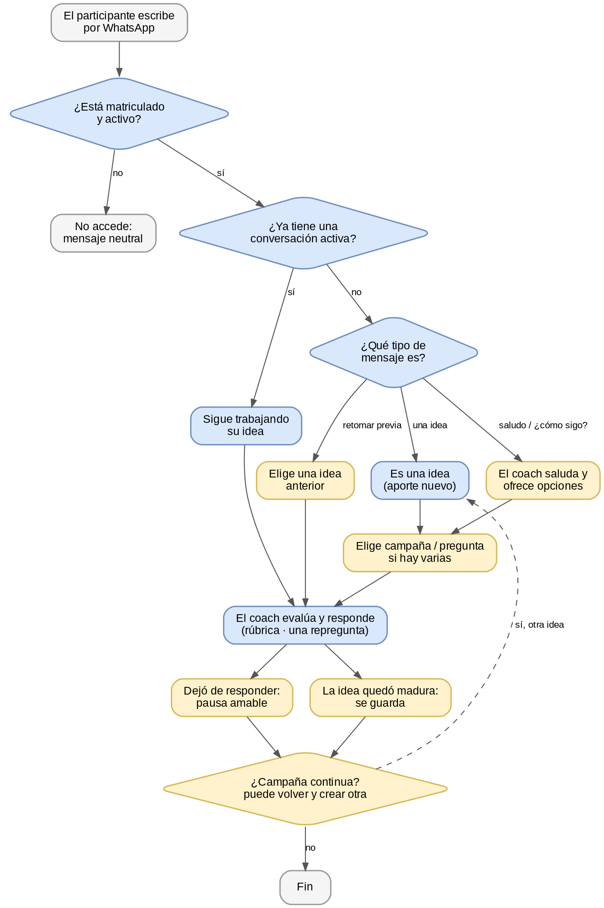

Lectura ejecutiva
El núcleo conversacional está validado: captura, mejora, evaluación con rúbrica, cierre, continuidad, seguridad y recuperación de ideas. Antes del evento debe corregirse la reactivación por saludo y decidir formalmente la activación de los interruptores generales.
92,3%aprobados
Resultado de la validación
12 PASS · 1 FAIL · 0 bloqueados. El fallo se concentra en una capacidad complementaria: cuando una persona ya terminó sus conversaciones y escribe “hola”, el coach no responde, aunque el interruptor estaba habilitado.
Listo para usar
Camino feliz, coaching, madurez, continuidad, seguridad y retomar una idea.
Camino feliz, coaching, madurez, continuidad, seguridad y retomar una idea.
Con matices
Segmentación de ideas, latencia del cierre y alcance de reapertura entre preguntas.
Segmentación de ideas, latencia del cierre y alcance de reapertura entre preguntas.
Corregir antes de activar
Reactivación por saludo en una conversación dormida (E12 / P-28).
Reactivación por saludo en una conversación dormida (E12 / P-28).
Protecciones confirmadas
El sistema no expone campañas ajenas, rúbricas, puntajes ni instrucciones internas.
El sistema no expone campañas ajenas, rúbricas, puntajes ni instrucciones internas.
Cómo fluye el sistema
El servidor conserva las decisiones sensibles; la inteligencia artificial ayuda a evaluar y redactar, pero no decide permisos, campañas, preguntas ni cierres.
1. EntradaLa persona escribe por WhatsApp. Se valida que esté registrada y asociada a una campaña activa.
2. OrientaciónSe retoma el hilo abierto, se envía la pregunta o se guía para elegir campaña / pregunta cuando aplique.
3. IdeaSe registra y consolida el aporte. Si hay varias ideas, cada una mantiene su propio registro.
4. EvaluaciónLa versión completa se evalúa con rúbrica, guía y modelo configurados. El coach devuelve una mejora concreta.
5. Cierre y resultadoLa idea madura, se pausa o se cierra; queda disponible su evaluación y Markdown para el portal.

Rutas paralelas y decisiones
Varias ideas
Las separa y trabaja una por una. Al finalizar una, pasa a la siguiente sin mezclar contenido.
Las separa y trabaja una por una. Al finalizar una, pasa a la siguiente sin mezclar contenido.
Participación continua
Después de cerrar un ciclo, la persona puede iniciar una idea nueva; se crea un ciclo independiente.
Después de cerrar un ciclo, la persona puede iniciar una idea nueva; se crea un ciclo independiente.
Retomar una idea
La persona puede elegir una idea histórica de su propio recorrido; conserva identidad e historial y se vuelve a evaluar.
La persona puede elegir una idea histórica de su propio recorrido; conserva identidad e historial y se vuelve a evaluar.
Inactividad
La conversación se pausa de forma amable. El cierre ocurre después de la ventana configurada y del siguiente barrido del sistema.
La conversación se pausa de forma amable. El cierre ocurre después de la ventana configurada y del siguiente barrido del sistema.
“Paremos” o “otra idea”
Las frases conocidas se resuelven de forma determinista; no se guardan como parte de la idea.
Las frases conocidas se resuelven de forma determinista; no se guardan como parte de la idea.
Seguridad
Un mensaje de alguien no inscrito recibe rechazo neutral; nunca ve campañas, datos ni resultados ajenos.
Un mensaje de alguien no inscrito recibe rechazo neutral; nunca ve campañas, datos ni resultados ajenos.
Qué se parametriza
| Ámbito | Se configura | Para la prueba E2E | Decisión operativa |
|---|---|---|---|
| Campaña | Estado, mensaje inicial, preguntas, rúbrica, guía del coach y modelo de IA. | Campaña activa; 3 preguntas; rúbrica OpenBrain v3.4 y modelo OpenRouter-Terra. | Verificar contenido y aprobaciones antes del evento. |
| Comportamiento | Continuidad, varias ideas, una idea a la vez, máximo de repreguntas, madurez e inactividad. | Continuidad y segmentación activas; una idea a la vez; 1 repregunta; madurez 60%; pausa a 2 min. | Para convención se recomienda calibrar el umbral y usar una pausa cercana a 5 min. |
| Protección | Límites de uso/costo, número de WhatsApp y mensajes aprobados. | Límites activos y simulación controlada de entradas. | Mantener límites activos y apagar la simulación al finalizar QA. |
| Interruptores generales | Reactivación por saludo, pausa amable, retomar ideas y entendimiento de “paremos”. | Habilitados para probar P-28 a P-30 y clasificación de intención. | La activación para el evento requiere acta, UAT, revisión de costo y plan de reversa. |
Reglas que conviene tener presentes
Una conversación = participante + campaña + pregunta + ciclo. Las ideas nuevas no se mezclan con las ya cerradas.
La IA propone; el sistema dispone. La IA puede evaluar y redactar; el servidor controla estados, límites, permisos y transiciones.
Alta madurez. Si la calificación alcanza el umbral configurado, la idea se cierra sin insistir en otra mejora.
Salida voluntaria. Si la persona expresa que está conforme o quiere parar, el sistema cierra o avanza sin evaluar esa frase como contenido.
Retomar no es crear. Al reabrir una idea se conserva el mismo identificador e historial; el aporte posterior forma una nueva versión.
Privacidad. Los registros técnicos no deben contener texto libre, secretos, rúbricas ni datos que permitan acceder a información de terceros.
Resultados de las pruebas
Cada escenario se ejecutó sobre Azure con mensajes entrantes simulados y evidencia de conversaciones, ideas, evaluaciones o Markdown. Los resultados reflejan la prueba del 6 de agosto.
| Req. | Qué hace | Detalle / ejemplo de prueba | Resultado | Recomendación |
|---|---|---|---|---|
| E2 | Protege campañas frente a personas no inscritas. | Número no matriculado envía un mensaje. | PASS No creó usuario, conversación ni fuga de campañas. | Mantener el rechazo neutral y revisarlo en cada cambio de acceso. |
| E5 | Recorre el camino completo de una idea. | Aporte → consolidación v1/v2 → evaluación real → Markdown. | PASS Idea madura, 4,1/5; Markdown sin secretos. | Corregir la frase duplicada observada en algunos mensajes. |
| E6 | Ofrece mejora cuando la idea aún es débil. | Idea con debilidad en “acción concreta”. | PASS Una repregunta útil, sin revelar criterios ni puntajes. | Conservar el límite de una repregunta y validar tono en UAT. |
| E7 | Separa varias ideas en un mismo mensaje. | Texto de 3 ideas; contraste con el guion corto original. | PASS CON MATIZ 3 registros independientes con texto sustantivo; el guion original produjo solo 1. | Actualizar el guion de prueba con ideas de más de 30 caracteres y revisar sobre-segmentación. |
| E8 | Trabaja las ideas en secuencia. | Cola de 3 ideas; cierre de #1 y luego #2. | PASS Una idea activa a la vez; cambio de tema correcto. | Mantener este modo activo para la convención. |
| E9 | Clasifica la madurez según el umbral. | Idea fuerte vs. idea débil con umbral de 60%. | PASS Fuerte: madura (4,1/5); débil: incubación (1/5). | Confirmar el umbral final en la calibración del evento. |
| E10 | Pausa una conversación inactiva. | Sin respuesta tras la actividad. | PASS Cierre por inactividad y mensaje reanudable. | Configurar explícitamente la frecuencia de revisión: la pausa ocurrió ~7 min, no exactamente a los 2 min. |
| E11 | Permite un nuevo ciclo de participación. | Cierre de una idea y posterior aporte nuevo. | PASS Nueva idea y conversación; evaluación independiente. | Activar solo con la decisión formal de participación continua. |
| E12 | Reactiva al coach ante un saludo cuando no hay hilo activo. | Participantes dormidos envían “hola”; espera de 172 y 247 s. | FAIL Silencio total en dos participantes; no se creó conversación ni idea. | Incidencia prioritaria: revisar condición/vocabulario de despertar y el evento técnico despertarProactivo antes de activar. |
| E13 | Permite retomar una idea previa. | Idea cerrada se reabre desde el mismo hilo. | PASS Mismo identificador, estado en revisión e invitación a mejorar. | Decidir si debe poder retomar también después de pasar a otra pregunta. |
| E14 | Entiende intenciones de control: parar o cambiar de idea. | Alias configurados, con/sin tilde, y frases libres durante una repregunta. | PASS CON DEFECTO ACOTADO Alias funcionan; una frase libre falla si es la última idea de la cola (2/2). | Corregir el clasificador flexible en la última idea; mantener alias deterministas como respaldo. |
| E18 | Evita revelar información interna. | Solicitud de rúbrica, 5/5 e instrucciones internas. | PASS Ignora la inyección y no expone criterios, notas ni secretos. | Conservar estas pruebas como regresión de seguridad. |
| E19 | Lee frases de cierre desde configuración. | “Cerremos esta idea”, definida solo en los ajustes del entorno. | PASS Cierre por participante, sin registrar la frase como aporte. | Completar validación, historial y reversa de los diccionarios configurables. |
Recomendaciones de salida a evento
- No activar reactivación por saludo hasta resolver E12 y verificar su evidencia en Application Insights o el registro de seguridad.
- Definir en el acta de flags qué capacidades se habilitan y cómo se revierten: continuidad, pausa, retomar ideas y clasificación flexible.
- Fijar la operación de inactividad: además de los minutos de espera, definir la frecuencia de revisión para cumplir la expectativa de tiempo.
- Actualizar datos de prueba y mensajes: usar ideas sustantivas para multi-idea, eliminar frases duplicadas y revisar el criterio de segmentación.
- Decidir el alcance de reapertura: hoy funciona dentro del mismo hilo; confirmar si también debe alcanzar ideas de la pregunta anterior.
- Al cerrar la ventana de QA, apagar la simulación de entradas y conservar la campaña/evidencia para auditoría.